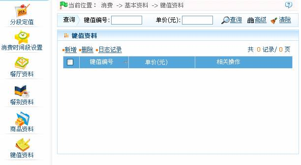
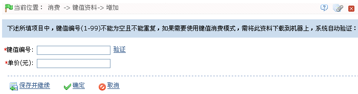

ID--8.2.6 键值资料
点击【消费】 【基本资料】
【基本资料】 【键值资料】图标，进入如下出所示的键值资料页面：
【键值资料】图标，进入如下出所示的键值资料页面：

该页面的操作主要包括键值资料的新增、删除、查询。
-
 新增键值资料
新增键值资料
 提示：操作前，请仔细查看页面中的操作提示。
提示：操作前，请仔细查看页面中的操作提示。
 提示：单击页面上的【日志记录】按钮，可以查看对应的操作日记记录。
提示：单击页面上的【日志记录】按钮，可以查看对应的操作日记记录。
1、单击键值资料页面上的【新增】按钮，进入新增键值资料页面。

仔细阅读页面中的操作提示。
输入“键值编号”和“单价”。
2、设置完成后，单击【确定】按钮保存，并返回“键值资料”页面；此时“键值资料”列表中将显示刚新增的键值资料。
 备注：ID消费属联机消费，当设备的消费模式设置为键值模式时，用户消费时会自动根据系统中设置的键值金额进行消费。
备注：ID消费属联机消费，当设备的消费模式设置为键值模式时，用户消费时会自动根据系统中设置的键值金额进行消费。
-
编辑键值资料
单击“键值编号”或直接单击“相关操作”下的【编辑】按钮，进入键值资料编辑页面，用户可根据需要修改该键值资料的“单价”，其中“键值编号”不可修改；修改完成，单击【确定】按钮保存即可。
-
删除键值资料
单击商品资料所在行的“相关操作”下对应的【删除】按钮，进入对应的删除键值资料页面，单击【确定】按钮，删除被选中的键值资料。具体操作方法，同删除餐厅资料一致。